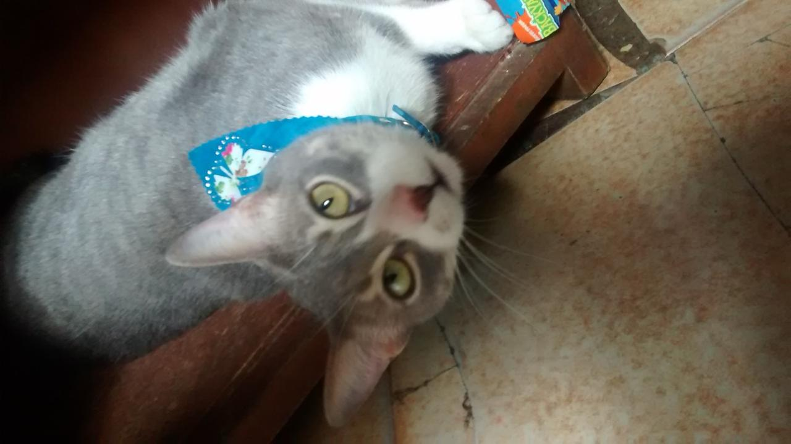
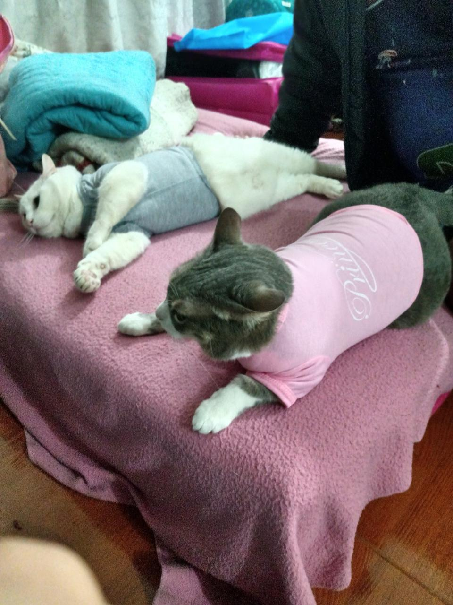
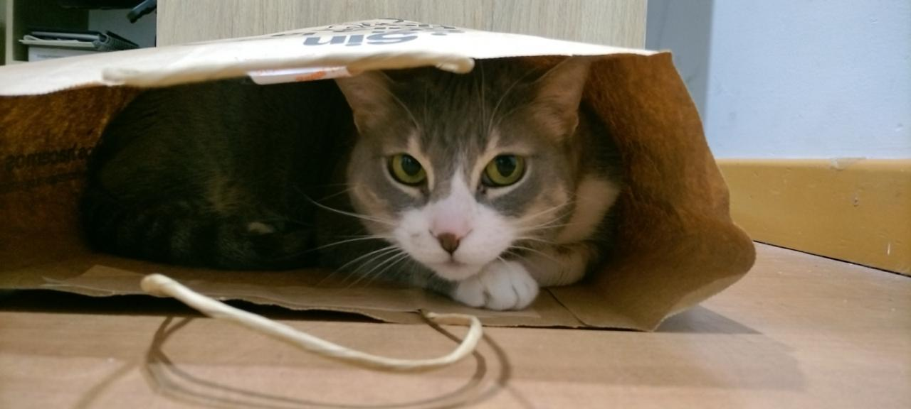

Este fue el año en el que adoptamos a ambos gatitos,
Sally es la gris y nacio en marzo del 2013, Jack es el blanco y nacio
en mayo (como yo :D) del 2014
2015
Ahi en donde los ven, tomo como 3 meses pa que se llevaran bien, ahora son inseparables
2016
Jack y sus maneras de dormir bien raras
2017
A Sally le gusta meterse en los lugares mas escondidos
2018
Y si no son escondidos son raros
2019
Sally termino siendo una mami pa Jack (se echan unos arrunchis muy antojables)
2020
DJ Jack
2021
Sally en la alacena de la comida

2022
primera y unica vez que les compramos ropa (QUE GORDOOOS)

2023
Sally tiene 54641 camas y cosas pa ella y aun asi prefiere una bolsa de Rappi

2024
Arrunchis de ellos ser como:
2025
Jack con un gorrito de cumple
2026
Mis dos bellos gordos (ni se nota que ya van a cumplir 13 y 12 años)